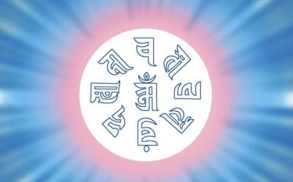

准提菩萨这个咒子感应是非常大的，但是要感应大，千万注意啊！诸位，我们修佛法的 人要有利他的心（ 利益他人的心 ），不要专求自利；以利他之心去唸，感应就很快。某 个人找你，这个人很自私自利，专为自己着想，到你家里客厅坐一下，微尘还要带一颗 走的人，那你都不欢迎嘛，对不对？所以，利他的人，诸佛菩萨自然会加庇。如果自私 自利人，不是不得感应，他得的小。
所以，大家默默唸去、默默修行，历代以来准提咒 的感应是非常大、非常多。这个唸诵的方法，正式修持是一口气、一口气唸。你们诸位 在家的道友们，在家里修持这个法门，散修，平常随时随地以恭敬心在心里默默地唸， 乃至观想佛母的像。大家说：“我观不起来”。怎么观不起来？那容易的很。这个佛母 的像大家都看过，你眼睛闭起来，就是这个影像，就有了；你先留这个影像，就叫做观 想起来了，懂了吧，这很容易的嘛。你真到了哪个境界，就不是这个像，那真的菩萨现 身，就不是影像，是菩萨跟你来合一了。
所以，你初步观想就是这个影像留住，就好 了。念念之间有这个佛母的影像，你心境就不同，自己每天身心健康也不同了。其次， 我们这个唸诵，如果在家里专修，在家的道友们先要静坐调整呼吸，这有很多方法。据 我所知，修道家、修瑜珈（ 印度的瑜珈术 ）、修密宗显教，真正练气功有两百多种方 法，故我常常觉得很好笑、很好玩，世界上的人就是这么一个鼻子，不要钱买的空气， 人真会想花样，玩出两百多种方法来。人啊，讲他了不起，智慧真高，人为万物之灵； 可是也可以说人为万物中笨蛋的笨蛋，就是这个鼻子、这个空气，吸进来就是，还要玩 几百种花样，这不是自找麻烦吗？可是它有它的道理，每个方法有其道理。常常有许多 人身体不好，我就说：“你做气功”，“哎哟，做不来”。我说：“你不是学过 吗？”，“我还没做过上路啊！”
我说：“你懒！鼻子是妈妈给你的，空气不要用钱买 的，这样马上就可以治好你身体的病，你都不干，活该！”活该什么？该死。鼻子是妈 妈给的，一毛钱不花，妈妈给的东西从来不要收回去的，所以，妈妈慈悲伟大。空气不 要钱的，你都不肯练。其实，修气功并不是空气，而是调整自己生命内部的气。有许多 人搞错，拼命地“啊，空气对我的关系非常大。”我说：“道家修到某一阶段把房门封 了，一点缝也不能有，绝对不通风，他就死了吗？”不会的。再说：“得了定的人呼吸 停止了，没有空气进来，他死了吗？”不会的。这个练气是讲内部的。有些人、有些同 学前来问我，在山里住的夜里怎么练气功？我说：“夜里你练什么气功？”他说：“跑 到山林外面。”我说：“你要死了。”他说：“怎么会？”我说：“那个树木跟草木， 它在夜里把废气呼出来了，我们叫它碳气……早晨那个树木、草木把氧气放出来，人需要 的是氧气，故早晨吸山林中树木、草木那个气有清新之感，因为我们吸收的是氧气。晚 上草木、树木也要呼吸，它夜里就把屁放出来了，我们吸的是草木的屁，你不该生病 吗？”所以不能乱搞的。
而且讲气，我们生命本身就有气，故调整自己的气，然后一口 气、一口气地唸，心气合一的唸。当然，有许多人把它当成练气功，这也不错呀！你的 身体至少越唸咒、越修行，精神越来越好。千万不要在喉咙上面叫。乱叫、干叫，把喉 咙叫哑了。我们这里很多同学过去唸经，干什么喉咙搞哑了？后来才懂得一口气、一口 气唸。“嗡嘛呢叭咪吽”，一句连一句，中间不要呼吸，实际上你舌头、嘴巴在动，舌 头在发音，无形中身体内部也在呼吸。要知道，人的呼吸是全身毛孔都在呼吸。只要活 着的人，不仅鼻子在呼吸；不过鼻子的呼吸最明显而已。所以你唸咒子“嗡嘛呢叭咪 吽”这六字真言，唸的时候一句接一句，中间不要呼吸，这就叫一口气。唸到这一口气 晓得接不上，连小腹都瘪起来，到最后，你让它松下来，嘴巴闭着不要吸气，它自然在 吸气。我们身体像个皮带一样，你把皮带里头这一股气统统瘪出，把它瘪完了，把皮带 一放松 ？
你们看过喂奶没有？小孩子喂奶，那个尼龙奶瓶把水都捏出来，空气瘪完 了，不是扁了吗？一放松，怎么样？空气自然进来，就膨胀了，这是最自然的气功，身 体就调整好了。
就这样唸，你等这一口气唸完了，嘴巴闭着不要特别呼吸（ 你加一点也 没有关系，不过有时候需要自然些 ），你就静下来了，这个时候心里头一点杂想妄念都 没有，至少很少。为什么很少？因为连呼吸都来不及，没有时间乱想了，快要断气了， 哪有时间想呀！所以这是最好的修行法门。你这个时候没有杂念，呼吸充满了，再开始 唸，又是一口气慢慢再来。“嗡嘛呢叭咪吽”只能唸十句就没有气了，或者唸三句就没 有气了，或者有些人唸二十句才没有气，慢慢越来越增强，练到以后“气满不思食”， 不想吃饭了，并不是胃有毛病；元气充满的人，吃与不吃都一样的。吃也可以，多吃、 不吃也可以，好久不吃、个半月不吃也没有关系。要吃，吃它一大堆也没有关系。
晓得 一口气、一口气的唸，这是初步，将来再进步还有很多的方法，这是真正的修持。所 以，修密法是一切的“有”法，修“有”。我现在讲了半天，元气都没有了，道家的术 语“开口神气散”，气就比较不容易凝聚，但是给诸位来个共修，了解这个咒语的唸 法，一口气、一口气的，尤其身体不好的人特别注意啊，你不一定跟到那么长，中间短 一点，你就休息。懂得这个原理，慢慢这样唸下去。生命 --- 我们这个生命就是一个元 气，元气完了就死亡。元气不是空气，而是生命本能。
所以，一口气、一口气唸，自己 本能的气来唸。宏忍、聂程明，你们现在开始（ 唸诵 ）。我们唸的时候都摄六根，眼睛 开闭没有关系，但是眼神要收回来，收回到自己内在，乃至收回到后脑，收回到与虚空 合一。这是简单的讲，详细的有很多方法。我们就唸“六字大明咒”，“嗡嘛呢叭咪 吽 ？ ”（ 师领众唸诵 ）。头要正，不要低下来，耳朵不要听外面，回过来听自己身体内 部的声音、听自己唸诵的声音。（ 师领众唸诵约八分钟后，说：“静下”）就是这样，此 心不动，越定久越好。念头动了，就默唸“嗡嘛呢叭咪吽”，继续这样的唸。我们因为 时间的问题，只做这么一次的示范，由这一点深入进去就会有所成就、有所感应。当咒 语唸到这里，一口气停了，这个时候杂念妄想没有，心如止水这个境界，如果有，越定 久越好。所谓定得好，自性清净的境相，就是清净的现量境相有少分的现前，这个很好。